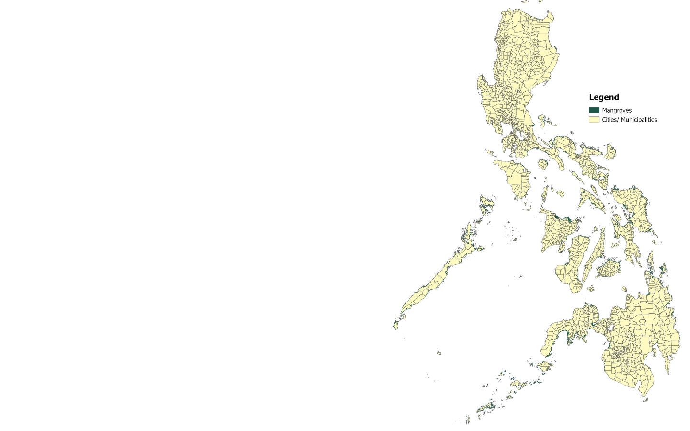
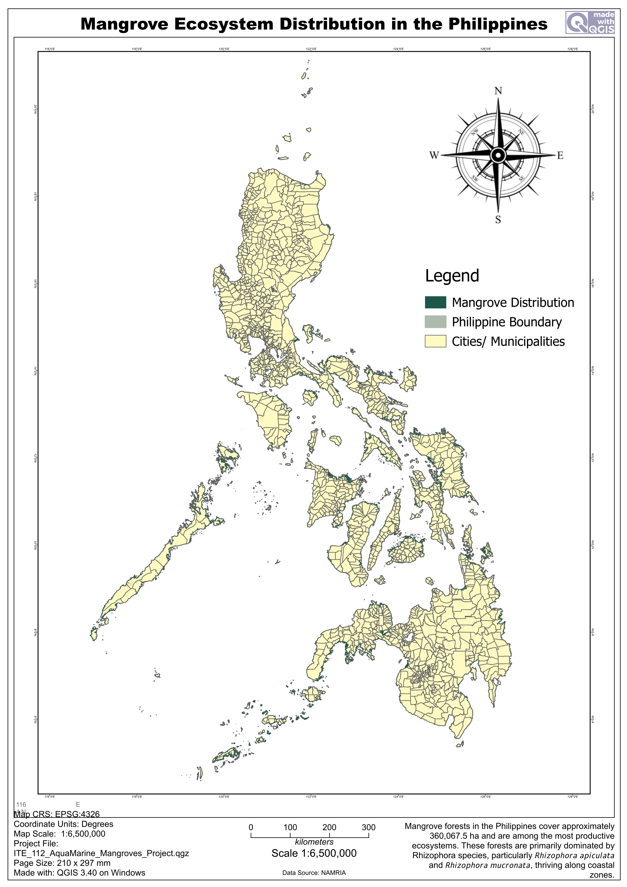

Visualizing mangrove distribution, coastal vegetation density, and ecological importance throughout the Philippines using QGIS-generated spatial datasets.
Mangroves are salt-tolerant trees and shrubs that grow in the shallow, intertidal zones where land and sea meet. They are vital coastal ecosystems because they protect shorelines from storms, act as essential nurseries for marine life, and store massive amounts of carbon.
Across the Philippines, mangrove ecosystems support biodiversity, fisheries productivity, and climate resilience. Their complex root systems stabilize coastlines and reduce the impacts of erosion and storm surges in vulnerable coastal communities.
Through spatial analysis and GIS mapping, mangrove cover distribution can be visualized to identify ecological hotspots, conservation priorities, and regional vegetation patterns throughout Philippine coastal regions.

Figure 1. Spatial distribution of mangrove ecosystems and coastal vegetation across Philippine coastal regions derived from NAMRIA datasets and processed using QGIS. Darker vegetation patterns indicate denser mangrove concentration while lighter regions represent sparse coastal vegetation cover.
Estimated total mangrove land area across the Philippines.
Dominant species include Rhizophora apiculata and Rhizophora mucronata.
Most mangrove ecosystems are concentrated in the southwestern Philippines, particularly in Palawan and the Sulu Archipelago.
Mangrove forests serve as natural coastal barriers and critical carbon sinks.